Teacher Information Page
The Teacher Information Page helps students get to know you, understand how to contact you, and feel more connected to the course. Completing it gives students a clear, welcoming place to find your introduction, office hours, contact information, and welcome video. Click each of the steps below for step-by-step instructions.
Adding the Teacher Information Page
To maintain a consistent experience for all CVA students, use the current Teacher Information Page template. The page is available in CTLS and can be copied directly into your Digital Classroom.
Do not reuse a Teacher Information Page from a previous course or term. Use the current CVA version and follow each step in these directions to ensure your page, video, captions, images, and other content meet required federal accessibility standards.
Step 1: Add the Teacher Information Page
Open Your Digital Classroom
Open your Digital Classroom in CTLS.

Open Student Coursework
Select Student Coursework.

Expand Browse Coursework
Open the Browse Coursework feature by selecting the dropdown arrow.

Open the Catalog
Select the Catalog button.

Search District Coursework
In District Coursework, search for CVA Teacher Templates.

Open the CVA Teacher Templates Tile
Select the CVA Teacher Templates class tile.

Find the Teacher Information Page
Locate the Teacher Information Page folder.

Copy the Page
Select the Copy icon to add the page to your course. Then, click Add Selected to finish the step.

Find the Copied Page
Return to your Digital Classroom. Locate the copied Teacher Information Page at the bottom of the Student Coursework folders.

Move the Page into the Correct Folder
Drag the Teacher Information Page into the Class Schedule and Teacher Information folder.

Reminder
The copied page will usually appear at the bottom of Student Coursework before you move it into the correct folder.
Recording the Welcome Video
A short welcome video helps students connect a face and voice with the name they see in the course. Aim for about one to two minutes. Introduce yourself, share something students may find interesting, and remind them that you are available to help.
All teacher-recorded videos must include accurate captions. Automatically generated captions must be reviewed and corrected before the video is published. Other digital materials must also follow accessible design practices.
Step 2: Open Panopto
Sign In to Panopto
Open the Panopto platform and sign in with your CCSD credentials.

Select image to enlarge.
Getting Started
Select Create. Then, choose Panopto Capture.

Select image to enlarge.
Allow Camera and Microphone Access
If prompted, allow your browser to use your camera and microphone.

Select image to enlarge.
Check the Camera Preview
Position yourself near the center of the frame and confirm that you can see yourself in the preview.

Select image to enlarge.
Check the Audio Indicator
Speak normally and watch the audio indicator. A moving indicator means the microphone is receiving sound. If the audio indicator does not move, select a different microphone.

Select image to enlarge.
Keep It Simple
For a simple welcome message, you do not need to record your screen or add presentation slides.
Step 3: Prepare What You Will Say
You do not need to write a formal script. Use the prompts below to organize what you would like to share.
Introduce Yourself
Share your name and the course you teach.
Share Your Background
Include a little about your teaching experience or background.
Share Something Personal
Mention an interest, hobby, family detail, or favorite place.
Explain How to Contact You
Let students know how they should contact you when they need help.
End with Support
Remind students that you are available to answer questions and support their success.
Aim for about one to two minutes. Your recording should feel welcoming and natural rather than highly produced.
Step 4: Record the Video
Select Record
Select the Record button at the bottom of the screen.

Select image to enlarge.
Wait for the Countdown
Wait for the five-second countdown.

Select image to enlarge.
Deliver Your Message
Deliver your welcome message at a natural pace.

Select image to enlarge.
Stop the Recording
Select the Stop button when you are finished. Once you stop, you’ll have the chance to redo or record a new video on the next screen. Otherwise, continue to the next step to name and save the recording.

Select image to enlarge.
It Does Not Have to Be Perfect
Look toward the camera rather than at your own image. A small pause or natural correction is fine. The goal is to help students see the person behind the course.
Step 5: Name and Save the Recording
Enter a Title
Enter a clear title for the recording.
Example: Welcome from First Name Last Name

Select image to enlarge.
Confirm the Folder
By default, your videos will be saved in the SCH folder. You can use the search bar to find videos by creator or title. NOTE: CVA teachers currently do not have access to the Cobb Virtual Academy folders in Panopto. This feature has been requested.

Select image to enlarge.
Wait for the Upload
Wait while Panopto uploads and processes the video. Do not close the browser until Panopto indicates that it is safe to do so.

Select image to enlarge.
View Everything
Once Panopto gives you the all clear, go ahead and close the window. Don't worry. Your video is saved automatically, and you'll be redirected to the Panopto home screen. Click Everything in the left-navigation menu to see your video. You may need to scroll, so keep an eye out for your video.

Select image to enlarge.
Processing Time
Processing may take a few minutes.
Step 7: Review the Video
Watch your recording once before adding it to the Teacher Information Page. Use the checklist below as you review.
Check the Beginning and End
Make sure the video begins and ends where you intended, without unnecessary silence or preparation time.
Check the Audio
Confirm that your voice is clear, easy to hear, and not covered by background noise.
Check the Lighting
Make sure your face is visible and that the image is not too dark or overly bright.
Check for Private Information
Confirm that no student information, passwords, email messages, or other private content appears.
Check for Notifications
Make sure no unexpected messages, alerts, or pop-up notifications appear in the recording.
Review the Captions
Read the automatic captions and correct names, course titles, and any words Panopto transcribed incorrectly.
Automatic captions must be reviewed for accuracy before the video is shared with students.
Step 8: Add the Video to the Teacher Information Page
Open the Video
Open your welcome video in Panopto and click the Share icon.
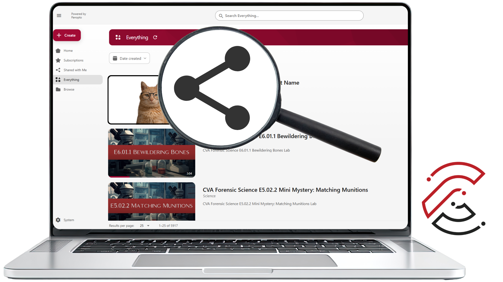
Select image to enlarge.
Confirm Viewing Permissions
Confirm that students in the course have permission to view the recording. The settings should be "Anyone who has the link." If not, click Change and select the correct permissions.
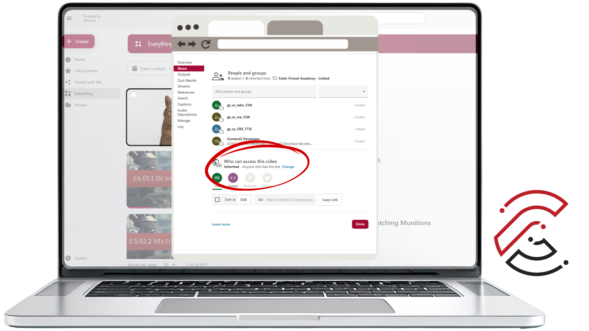
Select image to enlarge.
Open the Embed Option
Locate the video’s Embed option.
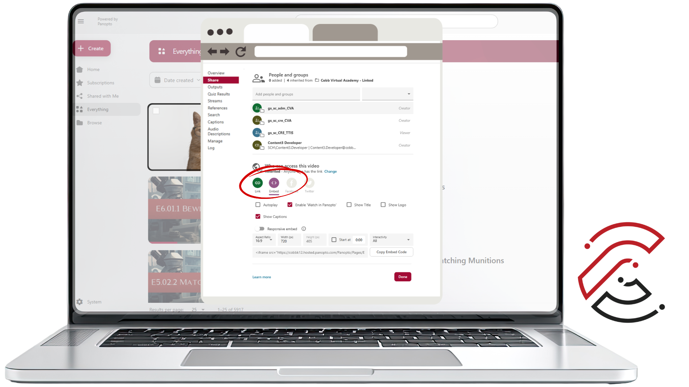
Select image to enlarge.
Embed Code Settings
Mark the following settings: Enable Watch in Panopto and Show Captions. Uncheck Responsive embed. IMPORTANT: Change the Aspect Ratio to Custom and set the Width to 640 and Height to 330. Then click Copy Embed Code. It is ok to close the window.
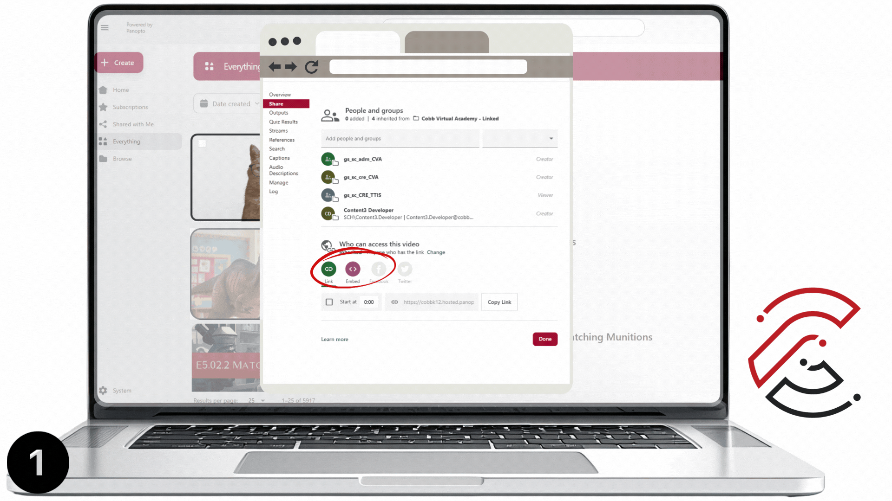
Select image to enlarge.
Return to CTLS
Return to the Teacher Information Page in your CTLS Digital Classroom. Unlock the page by clicking the Lock icon.
Replace the Video
Replace the sample Panopto video with your own recording. Carefully click near the edge of the video to replace it. Be sure that you are replacing the video, not the image behind it. Click the Replace Video icon. Click the < > icon and paste the embed code. The new video should appear right away.
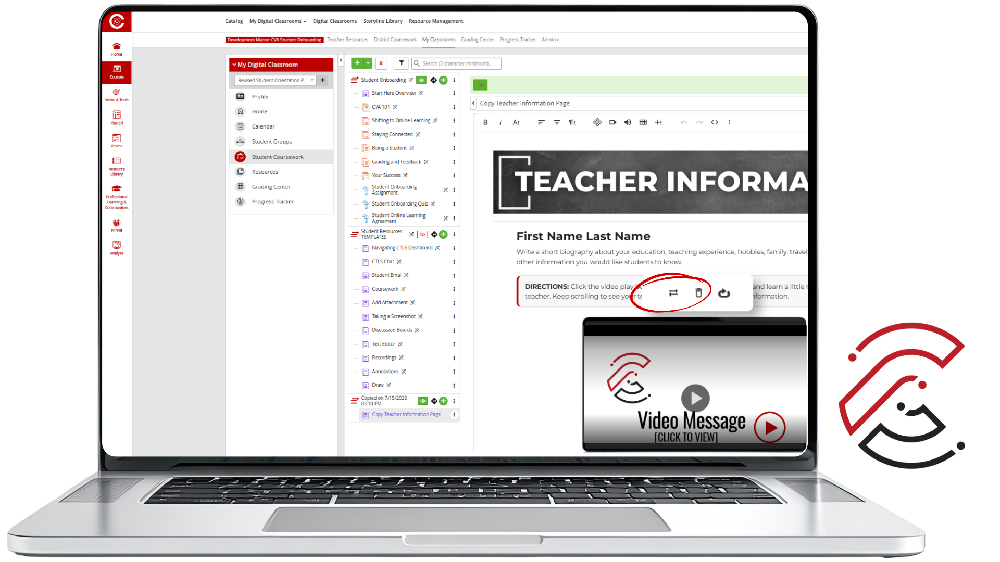
Select image to enlarge.
Check Viewing Permissions
A video may appear correctly for you while still being unavailable to students. Always test it in Student View.
Editing the Teacher Information Page
Edit the other details on the page, including your name, office hours, and contact information.
Do not reuse a Teacher Information Page from a previous course or term. Use the current CVA version and follow each step in these directions to ensure your page, video, captions, images, and other content meet required federal accessibility standards.
Step 9: Edit the Teacher Information Page
Unlock the Page
To edit the Teacher Information Page, you must first unlock it by clicking on the Lock icon.
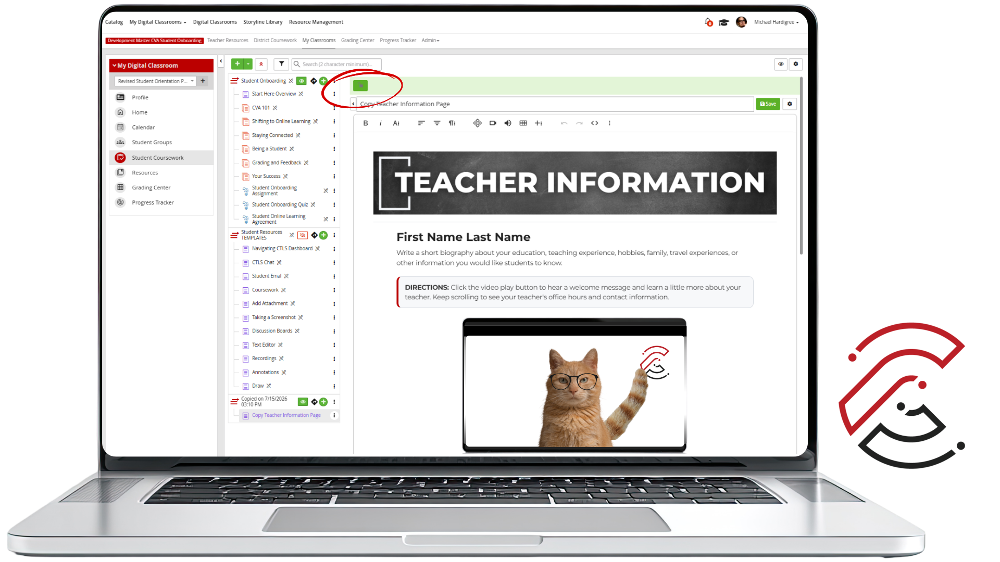
Select image to enlarge.
Teacher Name
Locate First Name Last Name near the top of the page. Highlight the text and begin typing your name. You can also add any honorific (Mr., Ms., etc.). NOTE: The font, size, and color should remain the same. You'll notice that CVA uses consistent fonts and colors in most of our designs. Don't change the font, size, or color when editing the Teacher Information Page template.
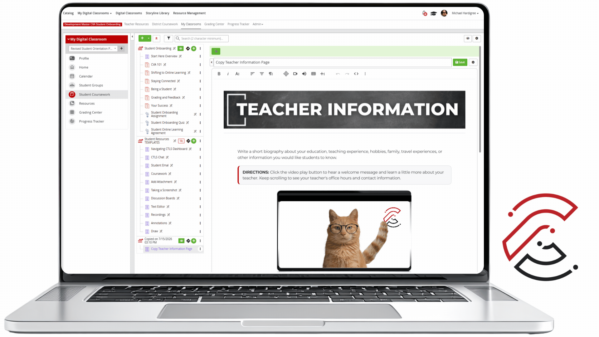
Select image to enlarge.
About Me
Write a short bio about your education, teaching experience, hobbies, family, travel experiences, etc. Tell students something about the class or what they can expect from you. This space is limited, so plan on about 30-40 words maximum. NOTE: Be sure to proofread your bio. The font, size, and color should remain the same. Don't change the font, size, or color when editing the Teacher Information Page template.
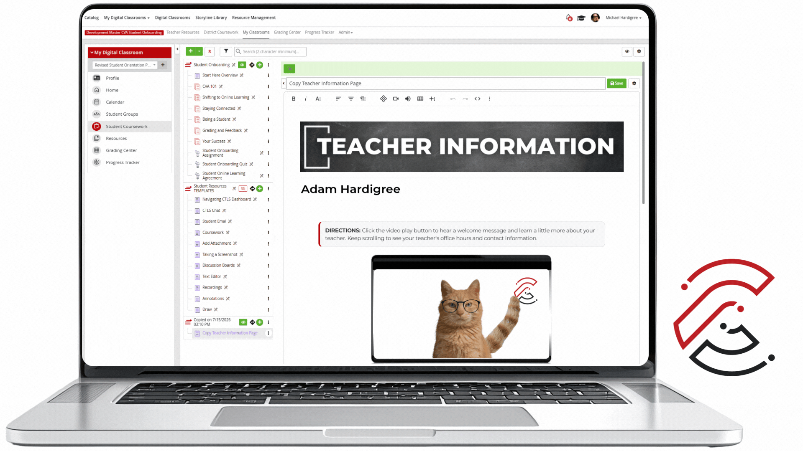
Select image to enlarge.
Office Hours
Office Hours are times set aside just to support students. They are meant to give students a chance to connect when they’re free—after school, in the evening, or at another agreed-upon time. This is a space for questions, help with assignments, feedback, or a quick check-in. The goal is simple: be available, approachable, and flexible so students can get support when they need it. NOTE: Office Hours are not part of your face-to-face classroom hours or daily teaching responsibilities at your home school.
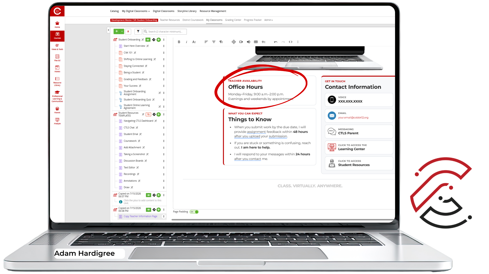
Select image to enlarge.
Things to Know
We want all students to have a positive experience in all of their CVA classes, so we clearly communicate our expectations for teachers on the Teacher Information Page.
- When you submit work by the due date, I’ll get assignment feedback to you within 48 hours after you submit.
- If you are stuck or something is confusing, reach out. I’m here to help.
- I’ll respond to your messages within 24 hours of reaching out to me.
NOTE: These are not to be edited. If you have any questions about the CVA Teacher Expectations, don't hesitate to reach out to CVA Teacher Support.
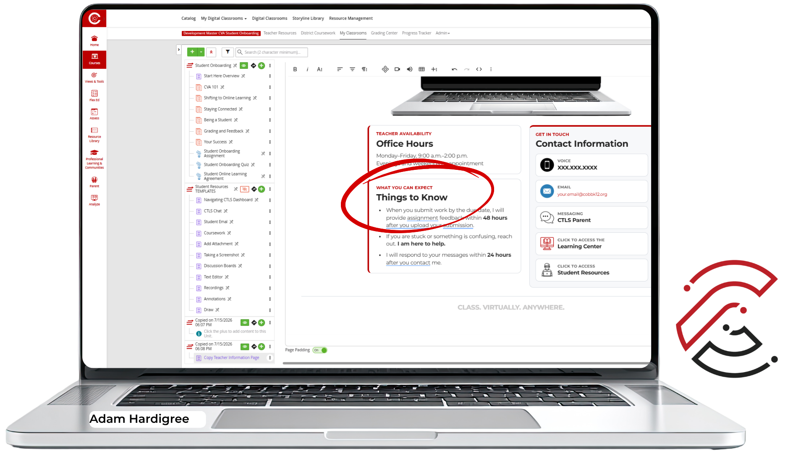
Select image to enlarge.
Voice Number
Having accurate contact information (and more than one way to connect) matters because it removes barriers to communication. When students and families know exactly how to reach you, they’re more likely to ask questions and get support before small issues become bigger problems. To update your Voice Phone Number, you simply type over the number in the Teacher Information Page template. Use the following format XXX.XXX.XXXX. NOTE: As a CVA teacher, you access to Virtual Phone in CTLS Parent. This will allow you to create a Virtual Phone Number to use with students. Virtual Phone is built for voice communication, not texting.
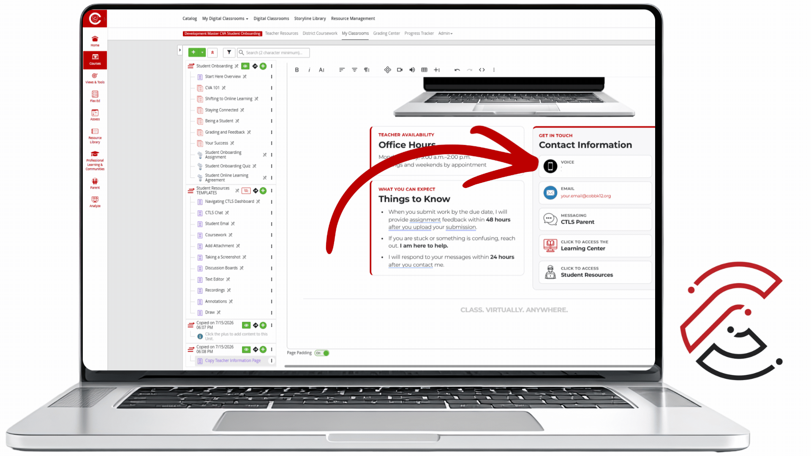
Select image to enlarge.
Left-click on the link to update your Email Address. Type over the email name and replace it with your address. Be sure to use your CCSD email.
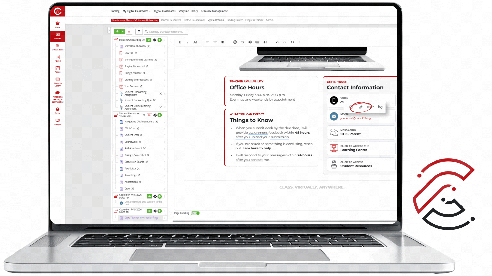
Select image to enlarge.
Save the Page
Save your changes.
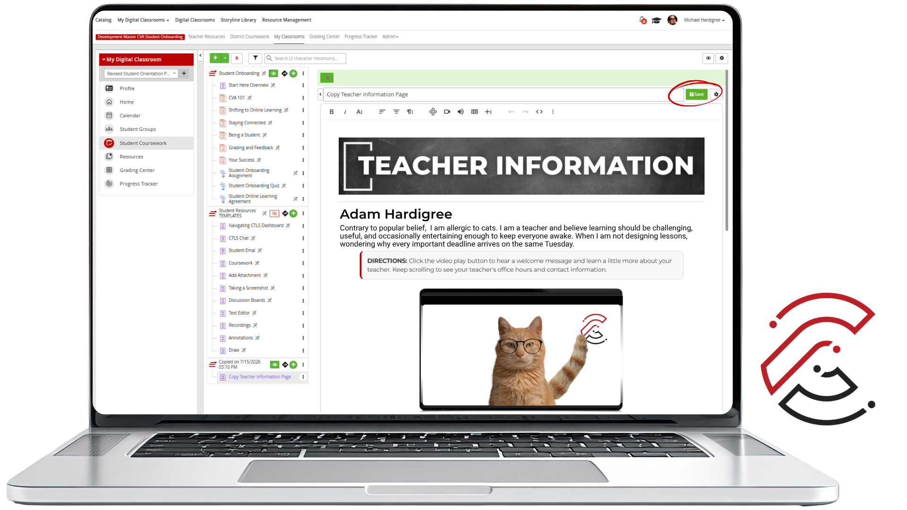
Select image to enlarge.